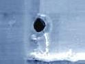
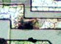
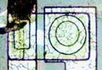

EOS and ESD
Failures and their Attributes
Electrical Overstress,
or
EOS,
is
a failure mechanism wherein the device is subjected to excessive
voltage, current, or power.
Electrostatic Discharge,
or
ESD,
is a special type of EOS mechanism in the form of a single-event, rapid
transfer of electrostatic charge between two objects.
Many people distinguish ESD from other EOS-related but non-ESD
mechanisms, so this discussion will do the same and refer to ESD as a
separate mechanism from conventional EOS.
EOS and ESD can destroy a semiconductor device in many ways, resulting in
observable
signs of damage or failure attributes.
There are, however, three (3) frequently-encountered and basic mechanisms by which
a device is damaged by EOS or ESD.
These mechanisms are: 1) dielectric or oxide punchthrough; 2) fusing of
a conductor or resistor; and 3) junction damage or burn-out.
Dielectric or Oxide Punchthrough
Dielectric or
oxide punchthrough refers to the EOS/ESD mechanism involving a voltage
pulse that is large enough to rupture an oxide or
dielectric
layer. This problem is prevalent in MOS circuits because the thin
oxide isolating the gate and the channel of the MOS transistor can
easily be 'punched through' by large voltage spikes. Trends in new
fab processes that lean towards thinner oxide layers also aggravate the
occurrence of this mechanism.
A typical
dielectric punchthrough event may occur in the following stages:
1) a high voltage spike occurs between two pins connected to opposite
sides of a dielectric layer, in effect applying a large potential
difference across the dielectric layer; 2) the breakdown voltage of the dielectric layer is exceeded by the
large potential difference across it; 3) the dielectric breaks down and starts conducting
current; 4) adiabatic or localized heating of the dielectric at the
point of current conduction occurs; and 5) the conduction site melts
down forming a filament that shorts the metal layer above the dielectric
(connected to one of the pins) and the metal layer below the dielectric layer (connected to the other pin).
|
 |
|
Figure 1. Photo of an oxide
punchthrough after the top metal layer has been
removed
|
Dielectric
punchthrough is minimized by using adequate ESD protection circuits and
prevention of EOS occurrences, such as the inadvertent or random
generation of voltage spikes in the circuit.
Conductor / Resistor
Fusing
The phrase
'Conductor/Resistor Fusing' literally pertains to a
metal line or
resistor that acted as a 'fuse', or one that has become open due to
excessive current. Such melting of a metal or resistor line is often due
to intense heat produced by excessive power dissipation, or
joule heating,
caused by an EOS/ESD event that involves a large current flow through
the conductor or resistor. Conductor/resistor fusing is also
sometimes referred to as 'metal burn-out' or 'resistor burn-out.'
The high power generated
during the EOS/ESD event is equal to Ie2R,
where Ie is the EOS/ESD current and R is the resistance of
the metal or resistor line. If this power produces enough
localized heat to bring the EOS/ESD site's temperature above the melting
temperature of the conductor or resistor, then the fusing, meltdown, or
burn-out of the conductor/resistor occurs.
|
 |
|
Figure 2. Photo of a fused metal
line
|
Conductor/resistor fusing is
often just a secondary mechanism of another EOS/ESD failure, such as a
dielectric or junction damage that has created a short circuit where
large currents can flow to subsequently cause the conductor/resistor
line to melt down or burn out.
Junction Damage or Burn-out
Junction
damage or burn-out refers to the destruction of a p-n junction due to
joule-heating caused by the EOS/ESD event, resulting either in the
junction's being open- or short-circuited. This type of damage also
involves joule heating, and is more prevalent in bipolar devices.
Hot spots arise in the junction when it undergoes joule heating,
especially in parts where there are non-homogeneities and geometrical
shifts. Silicon where these hot spots arise become intrinsic in
nature, whereby its resistivity goes down as temperature goes up. The
reduction in resistivity further sinks more current, increasing the
temperature further.
This cycle continues,
resulting in a thermal runaway that eventually melts the silicon with
the hot spot when its temperature exceeds the melting point of silicon.
The silicon meltdown often creates a short across the junction, although
high-energy transient EOS/ESD events can also result in open junctions.

Figure 3. Photo of a junction short
The power that heats up the
junction is equal to IeVBD,
where Ie
is the EOS or ESD current and VBD is the breakdown voltage of
the junction.
Reverse-biased junctions are more vulnerable to EOS/ESD damage than
forward-biased ones because its higher breakdown voltage results in a
higher power dissipation in the depletion layer, requiring a smaller
current to cause the damage.
See also:
What is ESD?;
What is EOS?;
Latch-up;
Die Failures
HOME
Copyright
©
2005
www.EESemi.com.
All Rights Reserved.